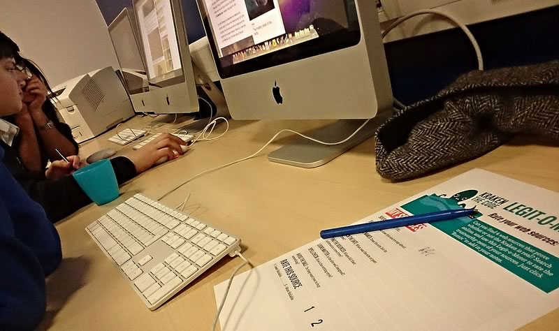

Learners will use the Internet to solve the mystery of The Kraken, a legendary sea creature, while also learning about search terms, keywords, and how to assess the validity and relevance of web sources.
Label three pieces of paper with “Real,” “Imaginary” and “Something In-between,” and hang them on different sides of the room.
10
min
Introduction
Have a brief conversation with your learners about web sources.
Is everything you read or watch online true?
How do you know when information on the internet is reliable?
How can you tell when it isn’t reliable?
Then review the Legit-o-Meter Tip Sheet to discuss some general rules for determining the credibility of a website.
25
min
Kraken the Code: Hunt
Split learners into groups of 2 or 3 and explain that each group’s challenge is to prove whether or not the legendary monster, The Kraken, is real or a myth.
Groups start by spending 20 minutes researching. Using the guidelines from the Tip Sheet, groups should evaluate 2 internet sources, documenting their findings on the Legit-o-Meter (either by writing on the handout or editing the online template).
Photo by Doug Belshaw
Consider guiding their research with the following prompts:
Ask learners to individually talk through the process of searching for credible information.
Do a sample search together and ask the group what to do next.
Pair-up learners and ask them to create a screencast explaining their decisions.
At the end of the research period, groups will stand under one of the signs: “Real,” “Imaginary,” or “Something In-between”.
Ask each group what they found out about the Kraken and to defend their opinions using the Legit-o-Meter worksheets they filled out. Participants can change position if they hear convincing arguments.
Conclude by asking the group to reflect on what they found.